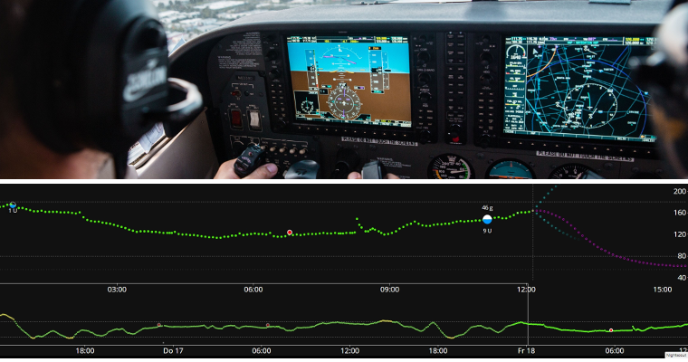

Introduction to APS and AAPS
What is an “Artificial Pancreas System”?
A human pancreas does a lot of things besides regulating blood sugar. However, the term “Artificial Pancreas System” (APS) usually refers to a system which works to automatically keep blood sugar levels within healthy limits.
The most basic way to do this is by detecting glucose levels, using these values to do calculations, and then delivering the (predicted) right amount of insulin to the body. It repeats the calculation, every few minutes, 24/7. It uses alarms and alerts to inform the user if intervention or attention is needed. This system is typically made up of a glucose sensor, an insulin pump and an app on a phone.
You can read more about the different artificial pancreas systems currently in use and in development in this 2022 review article:
Future Directions in Closed-Loop Technology.
In the near future, some so-called "dual-hormone" systems will also have the ability to infuse glucagon alongside insulin, with the aim of preventing severe hypos and allowing even tighter blood glucose control.
An artificial pancreas can be thought of as an “autopilot for your diabetes”. What does that mean?
In an aircraft, an autopilot does not do the complete job of the human pilot, the pilot cannot sleep through the entire flight. The autopilot aids the work of the pilot. It relieves them of the burden of permanently monitoring the aircraft, allowing the pilot to concentrate on wider monitoring from time to time. The autopilot receives signals from various sensors, a computer evaluates them together with the pilot’s specifications and then makes the necessary adjustments, alerting the pilot to any concerns. The pilot no longer has to worry about constantly making decisions.

What does hybrid closed loop mean?
The best solution for type 1 diabetes would be a “functional cure” (probably an implant of pancreatic cells which are protected from the immune system). While we are waiting for that, a “full closed loop” artificial pancreas is probably the next best thing. This is a tech system that doesn’t need any user input (like bolusing insulin for meals, or announcing exercise), with good regulation of blood glucose levels. At the moment, there are no widely available systems which are “full” closed loop, they all need some user input. The currently available systems are called “hybrid” closed loop, because they use a combination of automated technology and user input.
How and why did looping start?
The development of commercial technology for people with type 1 diabetes (T1D) is very slow. In 2013 the T1D community founded the #WeAreNotWaiting movement. They developed systems themselves using existing approved technology (insulin pumps and sensors) to improve blood glucose control, safety, and quality of life. These are known as DIY (do-it-yourself) systems, because they are not formally approved by health bodies (FDA, NHS etc). There are four main DIY systems available: OpenAPS, AAPS, Loop and iAPS.
A great way to understand the fundamentals of DIY looping is to read Dana Lewis’s book “Automated Insulin Delivery”. You can access it here for free (or buy a hardcopy of the book). If you want to understand more about OpenAPS, which AAPS has developed from, the OpenAPS website is a great resource.
Several commercial hybrid closed loop systems have been launched, the most recent of which are CamAPS FX (UK and EU) and Omnipod 5 (USA and EU). These are very different to DIY systems, mainly because they both include a “learning algorithm” which adjusts how much insulin is delivered according to your insulin needs from previous days. Many people in the DIY community have already tried out these commercial systems and compared them with their DIY system. You can find out more about how the different systems compare by asking on the dedicated Facebook groups for these systems, on the AAPS Facebook group or on Discord.
What is Android APS (AAPS)?

Figure 1. Basic outline of the Android APS (Artificial Pancreas System), AAPS.
Android APS (AAPS) is a hybrid closed loop system, or Artificial Pancreas System (APS). It makes its insulin dosing calculations using established OpenAPS algorithms (a set of rules) developed by the #WeAreNotWaiting type 1 diabetes community.
Since OpenAPS is only compatible with certain older insulin pumps, AAPS (which can be used with a wider range of insulin pumps) was developed in 2016 by Milos Kozak, for a family member with type 1 diabetes. Since those early days, AAPS has been continually developed and refined by a team of volunteer computer developers and other enthusiasts who have a connection to the type 1 diabetes world. Today, AAPS is used by approximately 10,000 people. It is a highly customisable and versatile system, and because it is open-source, it is also readily compatible with many other open-source diabetes softwares and platforms. The fundamental components of the current AAPS system are outlined in Figure 1 above.
What are the basic components of AAPS?
The “brain” of AAPS is an app which you build yourself. There are detailed step-by-step instructions for this. You then install the AAPS app on a compatible Android smartphone (1). A number of users prefer their loop on a separate phone to their main phone. So, you don’t necessarily have to be using an Android phone for everything else in your life, just for running your AAPS loop.
The Android smartphone will also need to have another app installed on it as well as AAPS. This is either a modified Dexcom app called build-your-own dexcom app BYODA or Xdrip+. This additional app receives glucose data from a sensor (2) by bluetooth, and then sends the data internally on the phone to the AAPS app.
The AAPS app uses a decision making process (algorithm) from OpenAPS. Beginners start out using the basic oref0 algorithm, but it is possible to switch to using the newer oref1 algorithm as you progress with AAPS. Which algorithm you use (oref0 or oref1), depends on which suits your specific situation best. In both cases, the algorithm takes into account multiple factors, and performs rapid calculations every time a new reading comes in from the sensor. The algorithm then sends instructions to the insulin pump (3) on how much insulin to deliver by bluetooth. All the information can be sent by mobile data or wifi to the internet (4). This data can also be shared with followers if desired, and/or collected for analysis.
What are the advantages of the AAPS system?
The OpenAPS algorithm used by AAPS controls blood sugar levels in the absence of user input, according to the users’ defined parameters (important ones being basal rates, insulin sensitivity factors, insulin-to-carb ratios, duration of insulin activity etc.), reacting every 5 minutes to the new sensor data. Some of the reported advantages of using AAPS are extensive fine-tunable options, automations and increased transparency of the system for the patient/caregiver. This can result in better control over your (or your dependant’s) diabetes, which in turn may give improved quality of life and increased peace of mind.
Specific advantages include:
1) Safety built-in
To read about the safety features of the algorithms, known as oref0 and oref1, click here. The user is in control of their own safety constraints.
1) Hardware flexibility
AAPS works with a wide range of insulin pumps and sensors. So for example, if you develop an allergy to Dexcom sensor patch glue, you could switch to using a Libre sensor instead. That offers flexibility as life changes. You don't have to rebuild or reinstall the AAPS app, just tick a different box in the app to change your hardware. AAPS is independent of particular pump drivers and also contains a "virtual pump" so users can safely experiment before using it on themselves.
2) Highly customisable, with wide parameters
Users can easily add or remove modules or functionality, and AAPS can be used in both open and closed loop mode. Here are some examples of the possibilities with the AAPS system:
a) The ability to set a lower glucose target 30 min before eating; you can set the target as low as 72 mg/dL (4.0 mmol/L).
b) If you are insulin-resistant resulting in high blood sugars, AAPS allows you to set an automation rule to activate when BG rises above 8 mmol/L (144 mg/dL), switching to (for example) a 120% profile (resulting in an 20% increase in basal and strengthening of other factors too, compared to your normal profile setting). The automation will last according to the scheduled time you set. Such an automation could be set to only be active on certain days of the week, at certain times of day, and even at certain locations.
c) If your child is on a trampoline with no advance notice, AAPS allows insulin suspension for a set time period, directly via the phone.
d) After reconnecting a tubed pump which has been disconnected for swimming, AAPS will calculate the basal insulin you have missed while disconnected and deliver it carefully, according to your current BG. Any insulin not required can be overridden by just “cancelling” the missed basal.
e) AAPS has the facility for you to set different profiles for different situations and easily switch between them. For example, features which make the algorithm quicker to bring down elevated BG (like supermicro boluses (“SMB”), unannounced meals, (“UAM”) can be set to only work during the daytime, if you are worried about night-time hypos.
These are all examples, the full range of features gives huge flexibility for daily life including sport, illness, hormone cycles etc. Ultimately, it is for the user to decide how to use this flexibility, and there is no one-size-fits-all automation for this.
3) Remote monitoring
There are multiple possible monitoring channels (Sugarmate, Dexcom Follow, Xdrip+, Android Auto etc.) which are useful for parents/carers and adults in certain scenarios (sleeping/driving) who need customisable alerts. In some apps (Xdrip+) you can also turn alarms off totally, which is great if you have a new sensor “soaking” or settling down that you don’t want to loop with yet.
4) Remote control
A significant advantage of AAPS over commercial systems is that it is possible for followers, using authenticated text (SMS) commands or via an app (Nightscout or AAPSClient) to send a wide range of commands back to the AAPS system. This is used extensively by parents of kids with type 1 diabetes who use AAPS. It is very useful: for example, in the playground, if you want to pre-bolus for a snack from your own phone, and your child is busy playing. It is possible to monitor the system (e.g. Fitbit), send basic commands (e.g. Samsung Galaxy watch 4), or even run the entire AAPS system from a high-spec smartwatch (5) (e.g. LEMFO LEM14). In this last scenario, you don’t need to use a phone to run AAPS. As battery life on watches improves and technology becomes more stable, this last option is likely to become increasingly attractive.
5) No commercial constraints, due to open application interfaces
Beyond the use of an open-source approach, which allows the source code of AAPS to be viewed at any time, the general principle of providing open programming interfaces gives other developers the opportunity to contribute new ideas too. AAPS is closely integrated with Nightscout. This accelerates development and allows users to add on features to make life with diabetes even more convenient. Good examples for such integrations are NightScout, Nightscout Reporter, Xdrip+, M5 stack etc. There is ongoing dialogue between open-source developers and those developing commercial systems. Many of the DIY innovations are gradually adopted by commercial systems, where developments are understandably slower, partly because interfaces between systems from different companies (pumps, apps, sensors etc) need to be carefully negotiated and licenced. This can also slow innovations which are convenient for the patient (or a small sub-population of patients, who have a very specific requirement) but do not generate any sizable profit.
6) Detailed app interface
With AAPS it is easy to keep track of things like: pump insulin levels, cannula age, sensor age, pump battery age, insulin-on-board etc. Many actions can be done through the AAPS app (priming the pump, disconnecting the pump etc.), instead of on the pump itself, which means the pump can stay in your (or your dependant's) pocket or belt.
7) Accessibility and affordability
AAPS gives people who currently can’t afford to self-fund, or don’t have funding/insurance, access to a world-class hybrid closed looping system which is conceptually years ahead, in terms of development, of the commercial systems. You currently need to have a Nightscout account to set up AAPS, although the Nightscout account is not required for day-to-day running of the AAPS loop. Many people continue to use Nightscout for collecting their data, and for remote control. Although AAPS itself is free, setting up Nightscout through one of the various platforms may incur a fee (€0 - €12), depending on what level of support you want (see comparison table) and whether you want to keep using Nightscout after setup or not. AAPS works with a wide range of affordable (starting from approx €150) Android phones. Different versions are available for specific locations and languages, and AAPS can also be used by people who are blind.
8) Support
No automated insulin delivery system is perfect. Commercial and open-source systems share many common glitches in both communications and temporary hardware failure. There is support available from community of AAPS users on Facebook, Discord and Github who designed, developed and are currently using AAPS, all over the world. There are also Facebook support groups and help from clinic/commercial companies for the commercial APS systems - it is worth speaking to the users, or former users of these systems to get feedback on the common glitches, the quality of the education programme and the level of ongoing support provided.
9) Predictability, transparency and safety
AAPS is totally transparent, logical and predictable, which may make it easier to know when a setting is wrong, and to adjust it accordingly. You can see exactly what the system is doing, why it is doing it, and set its operational limits, which puts the control (and responsibility) in your hands. This can provide the user with confidence, and a sounder sleep.
10) Access to advanced features through development (dev) modes including full closed loop
This AAPS documentation focuses on the mainstream “master” branch of AAPS. However, research and development is going on all the time. More experienced users may wish to explore the experimental features in the development branch. This includes integration of Dexcom G7, and automatically adjusting insulin delivery according to short-term sensitivity changes (DYNISF). The development innovations focus on strategies for full closed looping (not having to bolus for meals etc.), and generally trying to make life with type 1 diabetes as convenient as possible.
11) Ability to contribute yourself to further improvements
Type 1 diabetes can be highly frustrating and isolating. Having control over your own diabetes tech, with the possibility to “pay it forward” as soon as you are making progress by helping others on their journey can be really rewarding. You can educate yourself, discover the roadblocks and look for, and even contribute, to new developments and the documentation. There will be others in the community with the same quest that you can bounce ideas off and work with. This is the essence of #WeAreNotWaiting.
How does AAPS compare to MDI and open looping?
Multiple daily injections (MDI, (a) in Figure 2 below) usually involve giving an injection of a long-lasting insulin (e.g. Tresiba) once a day, with injections of faster-acting insulin (e.g. Novorapid, Fiasp) at mealtimes, or for corrections. Open pumping (b) involves using a pump to deliver basal at pre-programmed rates of rapid-acting insulin, and then boluses through the pump at mealtimes or for corrections. The basics of a looping system are that the looping app uses the sensor glucose data to instruct the pump to stop insulin delivery when it predicts you are heading for a low, and to give you extra insulin if your glucose levels are rising and predicted to go too high (c). Although this figure is oversimplified compared to real-life, it aims to demonstrate the key differences of the approaches. It is possible to achieve exceptionally good glucose control with any of these three approaches.

Figure 2. Basic overview of (a) MDI, (b) open-loop pumping and (c) hybrid closed loop pumping.
How does AAPS compare to other looping systems?
As of June 25 2023, there are four major open source closed loop systems available: OpenAPS, AAPS, Loop and iAPS, (formerly FreeAPS X). The features of the different systems are shown in the table below:
The features of the different systems are shown in the table below:
| Devicestype | Name | AAPS | Loop | Open APS | iAPS |
|---|---|---|---|---|---|
| Phone | Android |  |
|
|
|
| Phone | iPhone | |
|
||
| Rig | tiny computer (1) | |
|
|
|
| PUMP | Dana I | |
|
|
|
| PUMP | Dana RS | |
|
|
|
| PUMP | Dana R | |
|
|
|
| PUMP | Omnipod (Dash) (2) | |
|||
| PUMP | Omnipod (Eros) | |
|||
| PUMP | Diaconn G8 | |
|
|
|
| PUMP | EOPatch 2 | |
|
|
|
| PUMP | Medtrum TouchCare Nano | |
|
|
|
| PUMP | Medtrum TouchCare 300U | |
|
|
|
| PUMP | Roche Combo | |
|
|
|
| PUMP | Roche Insight | |
|
|
|
| PUMP | Older Medtronic | ||||
| CGM | Dexcom G7 | |
|||
| CGM | Dexcom One | |
|||
| CGM | Dexcom G6 | ||||
| CGM | Dexcom G5 | ||||
| CGM | Dexcom G4 | ||||
| CGM | Libre 3 | |
|
|
|
| CGM | Libre 2 | |
|
||
| CGM | Libre 1 | |
|
||
| CGM | Eversense | |
|
||
| CGM | MM640g/MM630g | |
|
||
| CGM | PocTech | |
|
||
| CGM | Nightscout as BG Source |
Table notes: 1. A rig is a small computer which you carry around with you, without a monitor. One supported device type is Intel Edison + Explorer Board and the other Raspberry Pi + Explorer HAT or Adafruit RFM69HCW Bonnet. The first APS were based on this setup, as mobile phones were not capable of running the required algorithms. Use of these systems has declined, as the setup on mobile phones has become easier, and phones have a display included. Intel has also stopped selling the Intel Edison. The excellent OpenAPS algorithms oref0 and oref1 are now incorporated in AAPS and iAPS. 2. Omnipod Dash is the successor of Omnipod Eros. It supports bluetooth communication and does not need a rig gateway to communicate between the Omnipod and mobile phone. If you have a choice, we recommend use of the Dash instead of Eros.
An international peer-reviewed consensus statement containing practical guidance on open source looping was written by and for health-care professionals, and published in a leading medical journal in 2022: Lancet Diabetes Endocrinol, 2022; 10: 58–74(1). It is well worth a read (including for your diabetes clinic) and summarises the main technical differences between the different open-source hybrid closed loop systems.
It is hard to get a “feel” for any system without using it, or talking to others who are using it, so do reach out to others on Facebook/Discord and ask. Most people find that AAPS is incredibly sophisticated in comparison to other hybrid closed loop systems (particularly the commercial systems), with a huge number of potentially customisable settings and features, discussed above. Some people can find this a little overwhelming in the beginning, but there is no rush to investigate all the possibilities at once, you can progress as slowly or as fast as you would like, and there is help available at every step of the way.
Does AAPS use artificial intelligence or any learning algorithm?
The current master version of AAPS (3.1.0.3) does not have any machine learning algorithms, multiple-parameter insulin response models, or artificial intelligence. As such, the system is open and transparent in how it works, and has the ability to be understood not just by experts, but also by clinicians and patients. It also means that if you have a sharply varying schedule (maybe switching from a stressful week at work to a relaxing holiday) and are likely to need a significantly different amount of insulin, you can immediately switch AAPS to run a weaker/stronger customised profile. A ‘learning system’ will do this adjustment for you automatically, but is likely to take longer to adjust the insulin delivery.
Which system is right for me or my dependant?
Practically, your choice of system is often restricted by which pump you already have, or can obtain from your medical provider, and your choice of phone (Apple or Android). If you don’t yet have a pump you have the biggest choice of systems. Technology is continually evolving, pumps are being discontinued and new pumps and sensors are being released. Most open-source systems work with the main sensors (Libre and Dexcom) or are quickly adapted to work with new sensors a year or so after they are released (with a bit of time delay for safety and stability testing).
Most AAPS users report more time in range, HbA1c reductions, as well as quality of life improvements from having a system that can auto-adjust basal rates overnight during sleep, and this is true for most hybrid closed loop systems. Some people have a preference for a very simple system which is not very customisable (which means you may prefer a commercial system), and others find this lack of control very frustrating (you may prefer an open-source system). If you (or your dependant) are newly diagnosed, a common route is to get used to using MDI plus a glucose sensor first, then progress to a pump which has the potential for looping, then progress to AAPS, but some people (especially small kids) may go straight to a pump.
It is important to note that the AAPS user needs to be proactive to troubleshoot and fix problems themselves, with help from the community. This is a very different mindset to that when using a commercial system. With AAPS a user has more control, but also the responsibility, and needs to be comfortable with that.
Is it safe to use open-source systems like AAPS?
Safety of the AAPS system
A more accurate question is probably “is it safe compared with my current insulin delivery system?” since no method of insulin delivery is without risk. There are many checks and balances in place with AAPS. A recent paper looked at the use of AAPS in a computer simulated set-up, which was an effective way to unobjectively trial how safe and effective the system is. More generally, it is estimated that over 10,000 individuals worldwide are using open-source automated-insulin delivery systems, and uptake continues to increase globally.
Any device that uses radio communications could be hacked, and this is true for a non-looping insulin pump as well. Currently, we are not aware of anyone attempting to harm individuals by hacking their diabetes-related medical equipment. However, there are multiple ways to protect against such risks:
-
In the pump settings, limit both the max bolus allowed and max temporary basal settings to amounts that you believe are safest. These are hard limits that we do not believe any malicious hacker could circumvent.
-
Set your CGM alarms enabled for both highs and lows.
-
Monitor your insulin delivery online. Nightscout users can set additional alarms to alert for a wide variety of conditions, including conditions that are much more likely to occur than a malicious attack. In addition to highs and lows, Nightscout can display diagnostic data useful for verifying that the pump is operating as desired, including current IOB, pump temporary basal history, pump bolus history. It can also be configured to proactively alert users to undesirable conditions, such as predicted highs and lows, low insulin reservoir, and low pump battery.
If a malicious attack was made on your insulin pump, these strategies would significantly mitigate the risk. Every potential AAPS user needs to weigh the risks associated with using AAPS, versus the risks of using a different system.
Safety considerations around improving blood glucose control too fast
A rapid reduction in HbA1c and improved blood glucose control sounds appealing. However, reducing average blood glucose levels too fast by starting any closed loop system can cause permanent damage, including to the eyes, and painful neuropathy that never goes away. This damage can be avoided simply by reducing levels more slowly. If you currently have an elevated HbA1c and are moving to AAPS (or any other closed loop system), please discuss this potential risk with your clinical team before starting, and agree a timeplan with them. More general information on how to reduce your glucose levels safely, including links to medical literature is given in the [safety section here.
Medical safety around devices, consumable supplies and other medications
Use a tested, fully functioning FDA or CE approved insulin pump and CGM for an artificial pancreas loop. Hardware or software modifications to these components can cause unexpected insulin dosing, causing significant risk to the user. If you find or get offered broken, modified or self-made insulin pumps or CGM receivers, do not use these for creating an AAPS system.
Use original supplies such as inserters, cannulas and insulin containers approved by the manufacturer of your pump and CGM. Using untested or modified supplies can cause CGM inaccuracy and insulin dosing errors. Insulin is highly dangerous when misdosed - please do not play with your life by hacking your supplies.
Do not take SGLT-2 inhibitors (gliflozins) when using AAPS as they incalculably lower blood sugar levels. Combining this effect with a system that lowers basal rates in order to increase BG is dangerous, there is more detail about this in the main safety section.
(introduction-how-can-i-approach-discussing-aaps-with-my-clinical-team)=
How can I approach discussing AAPS with my clinical team?
Users are encouraged to speak with their clinicians about their intention to use AAPS. Please do not be afraid to have an honest conversation with your diabetes team if you intend to use AAPS (or any other DIY loop, for that matter). Transparency and trust between patient and doctor is paramount.
Suggested approach:
Start a conversation with your clinician to determine their familiarity and attitude towards diabetic technology such as CGMs, pumps, hybrid loops and commercial looping. Your clinician/endocrinologist should be aware of the basic technology and be willing to discuss with you recent advancements with commercial loop products available within their regions.
Local precedent
Obtain your clinicians/endocrinologists’ views on DIY loop vs commercial looping, and gauge their knowledge in this area. Are they familiar with AAPS and can they share with you any helpful experience of working with patients with DIY looping?
Ask if your team has any patients under their care who already use DIY looping. Due to patient confidentiality, doctors cannot pass other patient’s details to you without obtaining the individual’s consent. However, if you want to, you can ask them to pass your contact details to an existing DIY looping patient if there is one the clinician feels you might "click” with, suggesting that you would be happy for the patient to contact you to discuss DIY looping. Clinicians are not obliged to do this, but some are happy to, since they realise the importance of peer-to-peer support in type 1 diabetes management. You may also find it useful to meet local friendly DIY loopers. This is of course up to you, and not entirely necessary.
National and International Precedent
If you feel unsupported by your team to loop with AAPS, the following discussion points may help:
a) The AAPS system has been designed BY patients and their caregivers. It has been designed ultimately for safety, but also drawing on in-depth patient experience. There are currently around 10,000 AAPS users worldwide. There is therefore likely to be other patients using DIY looping in your clinic's patient population (whether they know about it or not).
b) Recent peer-reviewed published guidance in the internationally leading medical journal The Lancet(1) has confirmed that DIY loops are safe and effective at improving diabetic control, including time in range. There are regular articles in leading journals like Nature(3) which highlight the progress of the DIY looping commmunity.
c) Starting with AAPS involves a gradual migration from “open” loop pumping, through low-glucose suspend, through to hybrid “closed” looping, by completing a number of objectives. There is therefore a structured programme, requiring the user to demonstrate a level of competence at each stage and fine-tuning their basic settings (basal, ISF and ICR) before they can close the loop.
d) Technical support is available to you from the DIY community through Github, Discord and Facebook closed groups.
e) You will be able to provide both CGM and insulin looping/pumping information as combined reports at clinic meetings (through Nightscout or Tidepool), either printed out or on-screen (if you bring a laptop/tablet). The streamlining of both CGM and insulin data will allow more effective use of your clinician’s time to review your reports and aid their discussions in assessing your progress.
f) If there is still strong objection from your team, hand your clinician printouts of the reference articles linked here in the text, and give them the link to the AAPS clinicians section: For Clinicians – A General Introduction and Guide to AAPS
Support for DIY looping by other clinicians
The paper published in the Lancet Diabetes Endocrinology(1)[ (co led by Kings’ and Guy’s and St Thomas’ NHS Foundation Trust, and co lead by Dr Sufyan Hussain, a consultant diabetologist and honorary senior lecturer from King’s in London) provides:
a) Assurance for professionals that DIY artificial pancreas systems/ open source as a “safe and effective treatment” option for type 1 diabetes and provides guidance on recommendations, discussions, supports, documentation;
b) Recognition that open-source automated insulin delivery (“AID”) systems can increase time in range (TIR) while reducing variability in blood glucose concentrations and the amount of hypo and hyperglycaemic episodes in various age groups, genders and communities;
c) Recommendation that healthcare workers should support type 1 patients or their caregivers who choose to manage their diabetes with an open source AID system;
d) Recommendation that healthcare workers should attempt to learn about all treatment options that might benefit patients including available open-source AID systems. If health care professionals do not have resources to educate themselves, or have legal or regulatory concerns, they should consider cooperating, or teaming up with other healthcare professionals who do;
e) Emphasis that all users of CGMs should have real-time and open-access to their own health data at all times
f) Emphasis that these open source systems have not undergone the same regulatory evaluations as commercially available medical technologies, and there is no commercial technical support. However, extensive community support is available; and
g) A recommendation that regulation and legal frameworks should be updated to ensure clarity on permitting ethical and effective treatment of such open source systems.
Another paper in Medical Law International, 2021(4) also highlights the UK General Medical Council’s ‘consent guidance’ places a strong emphasis on doctor and patients making decisions together. The doctor should explain the potential benefits, risks, burdens and side-effects on DIY APS and may recommend a particular option without pressuring the patient.
Ultimately it is up to the patient to weigh up these factors, along with any non-clinical issues relevant to them and decide which treatment option, if any, to accept.
If a doctor discovers in a clinic that their patient is looping with a DIY system, they are not exempted from their obligations to monitor the patient, simply because they did not prescribe the particular piece of technology the patient is using; clinicians must continue to monitor patients.
Doctors (at least in the UK) are not prohibited from prescribing unlicensed medicines and can use their clinical discretion. They should therefore use their clinical judgement to decide if a DIY APS is suitable for a specific patient, and discuss what they consider to be the pros and cons with the patient.
The articles referenced above, and other useful links and position statements are listed below:
- Open-source automated insulin delivery: international consensus statement and practical guidance for health-care professionals Lancet Diabetes Endocrinol, (2022) 10, 58–74
- In Silico Trials of an Open-Source Android-Based Artificial Pancreas: A New Paradigm to Test Safety and Efficacy of Do-It-Yourself Systems, 2020
- A DIY ‘bionic pancreas’ is changing diabetes care — what's next? Nature (2023), 620, 940-941
- Prescribing unapproved medical devices? The case of DIY artificial pancreas systems Medical law international, (2021), 21, 42-68
- Berlin Institute of Health position statement, 2022
- Do-It-Yourself Automated Insulin Delivery: A Health-care Practitioner User’s Guide (Diabetes Canada position and guide) Canadian Journal of Diabetes, (2023)47, E8, 389-397
- Netherlands (EN/NL) - for clinicians - how to help people on open source automated insulin delivery systems
- First Use of Open-Source Automated Insulin Delivery AndroidAPS in Full Closed-Loop Scenario: Pancreas4ALLRandomized Pilot Study Diabetes Technol. Ther., 25, 5, 2023
- Pre-school and school-aged children benefit from the switch from a sensor-augmented pump to an AndroidAPS hybrid closed loop: A retrospective analysis Pediatr. Diabetes 2021, 22, 594-604. 2021
- Outcomes of the OPEN project, an EU-funded project into the Outcomes of Patient’s Evidence with Novel, Do-it-Yourself Artificial Pancreas Technology (https://www.open-diabetes.eu/publications)
Why can’t I just download AAPS and use it straight away?
The AAPS app is not provided in Google Play - you have to build it from source code by yourself for legal reasons. AAPS is unlicensed, meaning that it does not have approval by any regulatory body authority in any country. AAPS is deemed to be carrying out a medical experiment on yourself, and is carried out at the user’s own risk.
Setting up the system requires patience, determination and the gradual development of technical knowledge. All the information and support can be found in these documents, elsewhere online, or from others who have already done it. Over 10,000 people have successfully built and are currently using AAPS worldwide.
The developers of AAPS take safety incredibly seriously, and want others to have a good experience of using AAPS. That is why it is essential that every user (or carer, if the user is a child):
-
builds the AAPS system themself and works through the objectives so that they have reasonably good personalised settings and understand the basics of how AAPS works by the time they “close the loop”;
-
backs up their system by exporting and saving important files (like keystore and settings .json file) somewhere safe, so you can setup again quickly if needed;
-
updates to newer master versions as and when they become available; and
-
maintains and monitors the system to ensure it is working properly.
What is the connectivity of the AAPS system?
Figure 3 (below) shows one example of the AAPS system for a user who do not require any followers interacting with the system. Additional open-source software and platforms which are not shown can also be integrated.

Figure 4 (below) shows the full potential of the AAPS system for a user who has followers and requires a monitor and send adjust the system remotely (like a child with type 1 diabetes). Additional open-source software and platforms which are not shown can also be integrated.

How does AAPS get continually developed and improved?
Most AAPS users use the fully tested master version of AAPS, which has been tested for bugs and problems, before being released to the community. Behind the scenes, the developers try out new improvements, and test these out in “developer” (dev) versions of AAPS with a user community who are happy to do bug updates at short notice. If the improvements work well, they are then released as a new “master” version of AAPS. Any new master release is announced on the Facebook group, so that the mainstream AAPS users can read about and update to the new master version.
Some experienced and confident AAPS users conduct experiments with emerging technologies and with dev versions of the AAPS app, which can be interesting for the less adventurous users to read about, without having to do it themselves! People tend to share these experiments on the Facebook group too.
You can read more about some of these experiments and discussion on emerging tech here:
Tim Street https://www.diabettech.com/
David Burren https://bionicwookie.com/
Who can benefit from AAPS?
| User Type |
|---|
| ✔️ type 1 diabetic |
| ✔️ caregiver or parent of a type 1 diabetic |
| ✔️ blind users type 1 diabetic |
| ✔️ *clincians and healthcare professionals |
The above table assumes that the user has access to both continuous gluocse monitor and insulin pump.
All data from AAPS* can be made available to healthcare professionals via data sharing platforms, including Nightscout that provides logging and real time monitoring of CGM data, insulin delivery, carbohydrate entries, predictions and settings. Nightscout records include daily and weekly reports which can aid healthcare professionals' discussions with type 1 patients with more accurate data on glycemic control and any behavioural considerations.
Accessibility for users AAPS who are partially or completely blind
Day to day AAPS use:
AAPS can be used by blind people. On Android devices, the operating system has a program called TalkBack. This allows screen orientation via voice output as part of the operating system. By using TalkBack you can operate both your smartphone and AAPS without needing to be able to see.
Building the AAPS app:
As a user you will build the AAPS app in Android Studio. Many people use Microsoft Windows for this purpose, where there is the Screenreader analogous to TalkBack. Since Android Studio is a Java application, the “Java Access Bridge” component must be enabled in the Control Panel. Otherwise, the screen reader of the PC will not speak in Android Studio.
How you do this depends on your operating system, two methods are outlined below:
1) In the Windows Start menu, enter “Control Panel” in the search field, open with Enter. It opens: “All Control Panel Items”.
Open the "Ease of Access Centre".
Then open “Use computer without a display” with Enter.
Under hear text read aloud select "turn on narrator" and "turn on audio display", and click "apply"
or:
2) Press Windows key and enter “Control Panel” in the search field, open with Enter. It opens: “All Control Panel Items”.
Press the letter C to get to “Center for Ease of Use”, open with Enter.
Then open “Use computer without a screen” with Enter.
There, at the bottom, you will find the checkbox “Enable Java Access Bridge”, select it.
Done, just close the window! The screen reader should work now.
What benefits can I get from AAPS?
With investment of your time, AAPS can potentially lead to:
-
alleviating the stress and burden of managing type 1 diabetes;
-
reducing the multitude of mundane decisions that arise from type 1 diabetes;
-
the provision of personalised and dynamic insulin dosing based on real-time data which can cut down the need for hypo treatments and reduce hyperglycemia episodes;
-
an increased knowledge of insulin management and confidence to better fine tune your settings;
-
the ability to create automatic settings (automations) that are tailored to fit in with your lifestyle;
-
improved sleep quality and overall reduction in the frequency of nighttime interventions;
-
remote monitoring and administration of insulin delivery for caregivers of type 1 diabetics; and
-
streamlining of all your portable diabetic equipment (continuous glucose monitor receiver and insulin controlling devices) by using an Android phone controlled by AAPS.
Ultimately, AAPS can empower individuals to better manage their diabetes, resulting in stable blood sugars and improved long term health outcomes.
Interested in how to get started with setting up AAPS? Take a look at the preparing section.